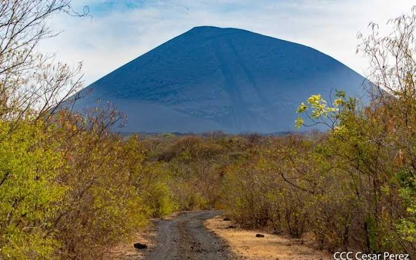
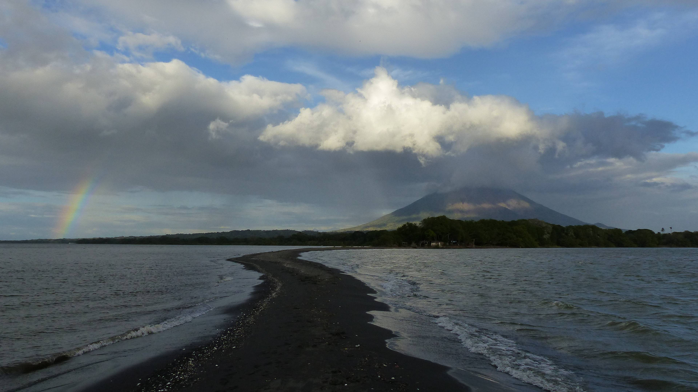
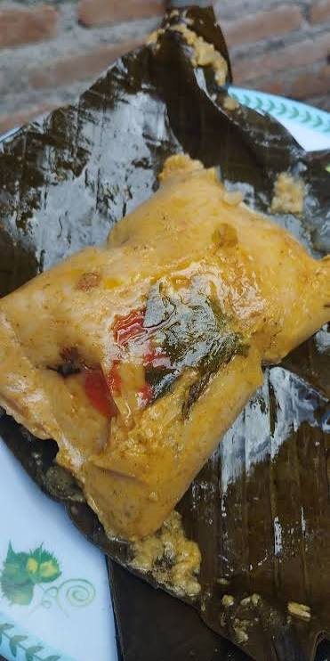
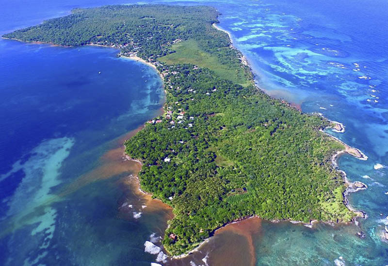
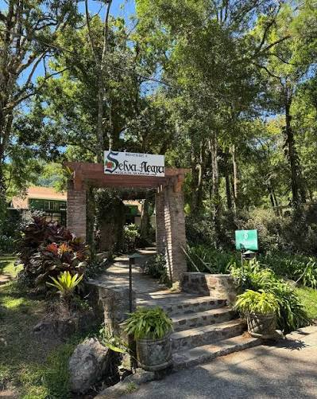
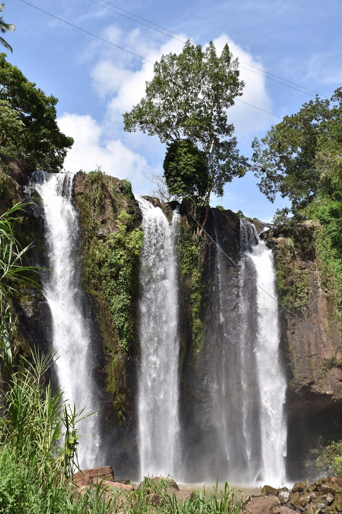
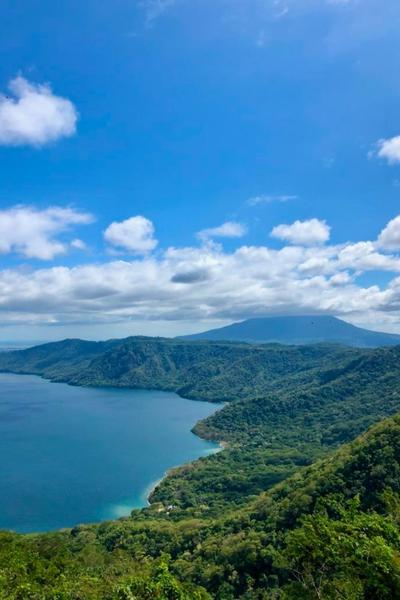
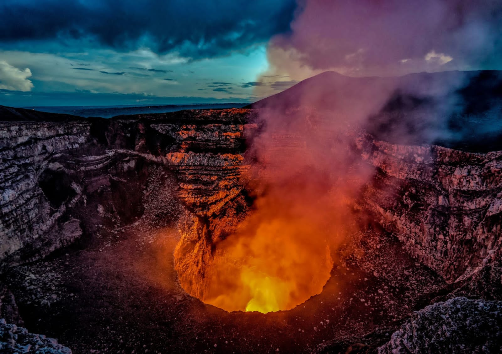

Catálogo de Destinos, Turismo & Hospedaje
Playas de surf, bahías tropicales, ríos sagrados, volcanes activos, hoteles ecológicos, hostales, cabañas campesinas, casas de alquiler, museos y vida nocturna en Nicaragua. Sin intermediarios foráneos y con balizas satelitales SOS 24/7.
 Cañón Acuático
$15 / Tour Guiado
Cañón Acuático
$15 / Tour Guiado
Monumento Nacional Cañón de Somoto
Paredes rocosas de más de 120 metros de altura esculpidas por el Río Coco (Wangki). Natación protegida con chalecos salvavidas y baqueanos campesinos.

Volcán Activo $30 / SandboardingVolcán Cerro Negro (Volcano Sandboarding)
El volcán más joven de Centroamérica (1850). Cono de escoria basáltica con fumarolas en la cumbre y descenso de adrenalina sobre arena volcánica a 60-80 km/h.

Reserva Biosfera Desde $20 / DíaIsla de Ometepe (Concepción & Maderas)
Oasis en medio del Gran Lago con dos volcanes colosales. Petroglifos sagrados, senderismo en bosque nuboso, Ojo de Agua medicinal y fincas agroecológicas.
 Playa & Surf
Clases Surf $25
Playa & Surf
Clases Surf $25
Playa Maderas (Santuario del Surf)
Famosa por sus formaciones rocosas esculpidas por el oleaje del Pacífico y rompientes constantes durante todo el año. Puestas de sol de fuego y vida playera.
 Bahía Natural
Veleros & Tours
Bahía Natural
Veleros & Tours
Bahía de San Juan del Sur & Mirador del Cristo
Bahía protegida en herradura con puerto de pescadores artesanales, veleros al atardecer, malecón gastronómico y vista panorámica desde el Cristo de la Misericordia.
 Eco-Resort
Desde $180 / Noche
Eco-Resort
Desde $180 / Noche
Morgan's Rock Eco-Lodge & Reserva Privada
Bungalows de madera sostenible suspendidos sobre el dosel de la selva tropical con vistas al mar. Playa privada, avistamiento de monos aulladores y granja orgánica.
 Hotel Colonial
Desde $75 / Noche
Hotel Colonial
Desde $75 / Noche
Hotel Darío & Casona Señorial
Joyel neoclásico de 1900 en el corazón de la Gran Sultana. Patio andaluz con fuentes de cantera, piscina central, balcones coloniales con vista al Volcán Mombacho.
 Hostal en Árboles
Desde $18 / Cama
Hostal en Árboles
Desde $18 / Cama
The Treehouse Jungle Hostel
Hostal icónico construido a 30 metros de altura sobre árboles centenarios. Puentes colgantes, canopy nocturno, mirador de estrellas y ambiente internacional mochilero.
 Cabaña Rural
$22 / Noche Familiar
Cabaña Rural
$22 / Noche Familiar
Cabañas Comunitarias Finca Magdalena
Hospedaje cooperativo 100% campesino fundado en 1888. Producción de café orgánico certificado, senderos directos a petroglifos precolombinos y laguna del volcán.
 Casa de Alquiler
$195 / Noche (6 pers.)
Casa de Alquiler
$195 / Noche (6 pers.)
Villa Vista Redonda & Infinity Pool
Residencia vacacional privada con piscina infinita al borde del acantilado, cocina completa equipada, terrazas abiertas al Pacífico, Wi-Fi satelital Starlink y seguridad 24/7.
 Museo Histórico
$5 / Entrada General
Museo Histórico
$5 / Entrada General
Museo Convento San Francisco & Estatuaria Zapatera
El edificio más antiguo de Nicaragua (1529). Alberga la colosal colección de estatuaria lítica de la Isla Zapatera (ídolos zoomorfos y antropomorfos del 800-1200 d.C.).
 Fortaleza 1675
$4 / Entrada & Museo
Fortaleza 1675
$4 / Entrada & Museo
Fortaleza de la Inmaculada Concepción
Baluarte militar español construido para repeler piratas en el Raudal del Diablo. Museo de armas, celdas subterráneas y vistas imponentes del Río San Juan hacia Indio Maíz.
 Discoteca & Lounge
Entrada Libre
Discoteca & Lounge
Entrada Libre
Arribas Sunset Beach Club & Lounge
Epicentro de la vida nocturna playera con DJs internacionales y bandas de reggae locales. Pistas de baile frente a la arena, coctelería con Flor de Caña y fogatas marinas.
 Bares & Fiesta
Ambiente Bohemio
Bares & Fiesta
Ambiente Bohemio
Calle La Calzada Fiesta & Bares al Aire Libre
Paseo peatonal repleto de terrazas coloniales, marimbas en vivo, bares artesanales, bailarines folclóricos de Gigantonas y peñas trovadoras hasta la medianoche.

Cocina Ancestral Platos desde $5Restaurante Tradicional La Cocina de Doña Haydée
Templo del sabor nicaragüense con recetas centenarias: nacatamales de masa colada, baho cocido en hoja de chagüite, indio viejo criollo y tres leches tradicional.
 Playa & Tortugas
Entrada $8 Refugio
Playa & Tortugas
Entrada $8 Refugio
Playa El Coco & Santuario de Tortugas La Flor
Uno de los 7 sitios del planeta con arribadas masivas de tortugas paslama (hasta 30,000 en una noche). Aguas tranquilas y arena dorada rodeada de bosque seco tropical.

Paraíso Caribeño Desde $35 / CabañaBig Corn Island & Little Corn Island
Joya caribeña con arrecifes de coral intactos, buceo con tiburones nodriza, playas de arena blanca como talco, rondón de mariscos fresco y cultura creole bilingüe.

Bosque Nuboso $45 / Cabaña MontañaReserva Ecológica Selva Negra & Finca Cafetalera
Nebliselva virgen a 1,400 msnm con senderos de orquídeas, hábitat del Quetzal resplandeciente, cata de café ecológico y prácticas agroforestales de carbono neutral.

Cascada Selvática $10 / Canopy & EntradaCascada La Luna & Cañón del Café
Impresionante catarata oculta en la espesura del bosque de niebla jinotegano. Canopy sobre la caída de agua y senderos ecológicos comunitarios.

Cráter Volcánico $12 / Kayak & PaseReserva Natural Laguna de Apoyo
Cráter volcánico colapsado con aguas termales minerales de transparencia turquesa. Kayak ecológico, natación protegida y avistamiento del tucán verde.

Lago de Lava $10 / Tour NocturnoParque Nacional Volcán Masaya (Popogatepe)
El cráter Santiago y su lago de lava incandescente activo. Cruz de Bobadilla, túneles de lava fosilizada donde anidan murciélagos y chocoyos resistentes al gas.
 Hostal Colonial
Desde $14 / Cama
Hostal Colonial
Desde $14 / Cama
Poco a Poco Garden Hostel & Pool
Casona colonial leonesa con jardín tropical, piscina refrescante, clases de salsa, cocina comunitaria y tours diarios al Cerro Negro y Las Peñitas.
 Hospedaje Campesino
$18 / Noche con Desayuno
Hospedaje Campesino
$18 / Noche con Desayuno
Posada Ecológica y Cafetalera San Ramón
Cabañas de madera y barro en fincas de mujeres productoras de café. Desayuno típico campesino con cuajada fresca, tortillas recién hechas y caminatas por cascadas.
 Casona Colonial
$140 / Noche Completa
Casona Colonial
$140 / Noche Completa
Casa Señorial Colonial del Convento
Casona histórica de techos altos de cedro real, piscina interior privada, patio colonial con orquídeas, 3 habitaciones con aire acondicionado y personal de servicio.
Calculadora de Retorno Rural Campesino
Calcula cómo el modelo de comisión 0% de Baqueano erradica la fuga del 20-25% que imponen las OTAs foráneas, dejando el dinero íntegro en las comunidades nicaragüenses.
Cotizador Bimoneda con Ley 306 INTUR
La Ley 306 de Incentivos para la Industria Turística de la República de Nicaragua exonera del 15% del IVA a turistas no residentes que contratan servicios turísticos registrados.